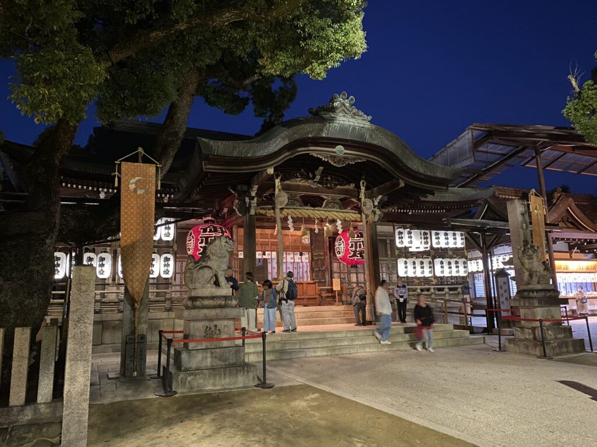
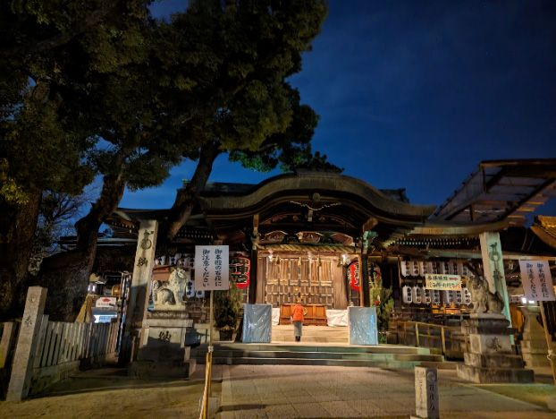

石切参道商店街 · A street built for slowing down
This narrow, sloped street is lined with more fortune-telling shops per block than almost anywhere else in Japan — palm reading, face reading, name divination, and a dozen other traditions, packed into shopfronts that have barely changed in decades. Most visitors just walk through. We'd rather you didn't.
Here's the thing about this street: it isn't really a tourist attraction. It's where Osaka locals come, on ordinary weeknights, for an honest answer about something on their mind. Which means it's one of the very few places on this entire tour where you're not just looking at Japan — you're standing in the middle of it, next to people who came here for their own reasons.
Divination like this has old roots in Japan, and they run closer to Shinto than you might expect. Long before it was a way to plan your week, fortune-telling was tangled up with warding off misfortune — the same impulse behind a shrine's purification rites, where a priest would clear away bad luck and offer guidance for whatever was troubling someone. This street still carries a trace of that: half practical advice, half quiet ritual.

